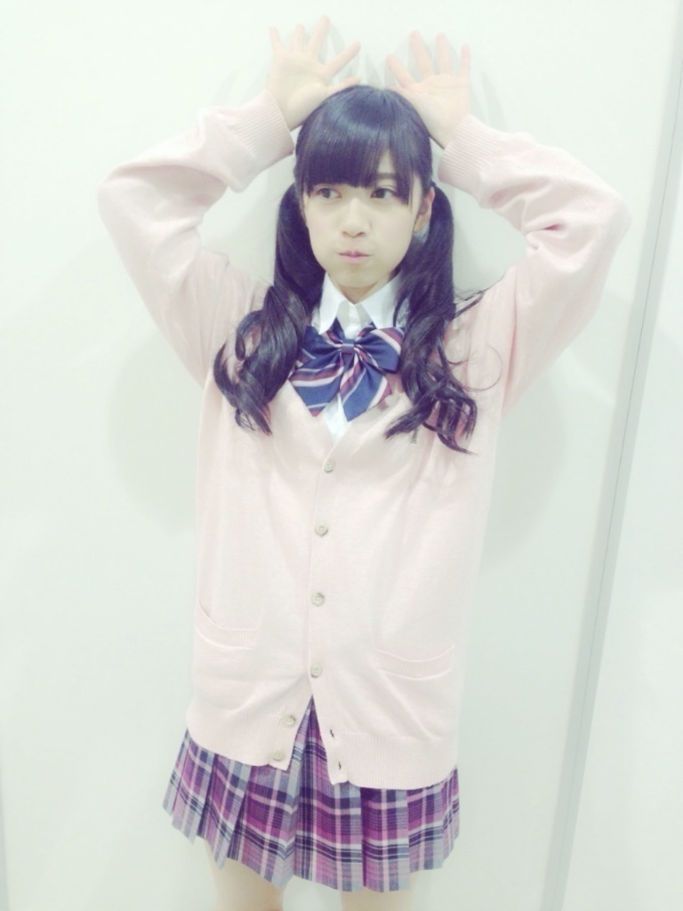
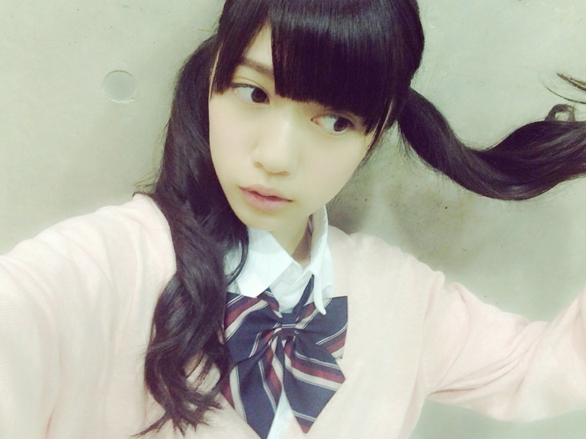
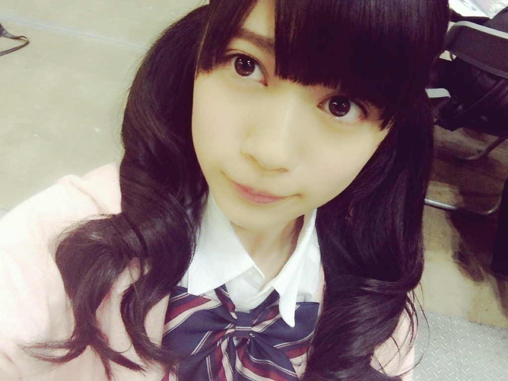

2015/0206Fri底から見える✡
おはようございます
こんにちは
こんばんは
らんぜの勢い？
とまらんぜ( ˙-˙ )
個人ブログでの
初投稿では
沢山の方にコメント頂きました。
本当に本当にありがとうございます
『個人ブログ開設おめでとう^ ^
待ってたよ。うれしいな。』
『個人ブログきた〜(*^◯^*)
蘭世のブログ好きだから
これから楽しみ！』
『たまらんぜ。』
こう言った１つ１つの出来事も
おめでとうと祝福して下さる
皆さんは本当に優しいなっと
改めて
実感出来ました。
研究生リレーブログでは
６日に１回決まった日での
投稿でしたが
個人ブログでは気まぐれに
書きたい事がある日に
投稿できるのが
凄くいいなーっと思っていて
今まで
握手会やライブ他のイベント当日に
ブログ担当ではないと
なかなか更新できなかったので
これはすごく有難い( ˙-˙ )
今回のブログは
もっとちゃんしたブログを
書きたかったのですが
前回のコメント
全部読みきってから
できるだけ早く
皆様に感謝の気持ちを
伝えたくて短めです、、、
1000件とちょっとの
コメント有り難うございました
そして、これからも
よろしくお願い致します♪
おまけ◎

研究生リレーブログ最後の日に
あげようとしていた
画像達を送ります。
握手会にて、なんちゃって制服

握手会では長い長い列ができていて
とても嬉しくて
何だか泣いちゃいそうなくらい
感動しました。
すみません
嬉しくても悲しくても
すぐ泣いちゃうんです、、、( ˙-˙ )
最後まで読んで下さり
ありがとうございました。
宝塚のお話です
花組の水美舞斗様が新人公演
主演だよーーーー
万歳！！！！
2015/02/06 18:24


コメント(462)
前のブログの1000コメントおめでとう！
蘭世のことをたくさんの人が
応援してくれてるってことだね！！
俺まで嬉しいなあ！
これからも全力で応援するからね！
蘭世かわいいし、握手会も楽しいから
最高だよ！！ふぁいてぃん！
けんちゃん☆
せいたんが卒業発表したからできるだけとせいたんとのツーショット撮ってあげてね
どんどん更新してねー
録音会行くよ！
よろしくねー
またいつか質問のコーナーやってほしいです
更新待ってた〜♡
今バレンタインの準備してる♡
明日みんなに配るんだ〜♡
らんらんなんの衣装着るのかな？
券取りたかったよ〜！泣
楽しんでね！！！
マジたまらんぜ。
ピンクのカーディガン似合う！
らんらんはすぐ泣いちゃうとこも可愛いよ♪
そういや、最近らんらんって言う人減ったよね
自分はずっとらんらんっ呼んでいくね
ではお仕事頑張ってね（~▽~＠）♪♪♪
祐太/昼下がりの平塚
おめでとうございます
この勢いが止まらないように
あっ、とまらんぜですね
頑張ってください
ブログアップありがと⁽⁽ ◟(灬 ˊωˋ 灬)◞ ⁾⁾
制服らんぜ可愛すぎ(∩´﹏`∩)♡
だいすき！
くるちゅん。
今度らんぜのメガネ姿の写真を
ブログにのせて～ヽ(・∀・)ノ
初めてコメントします＼(^o^)／
のぎ天見てらんぜちゃんのことめっちゃかわいいなって思いました(笑)
これからも頑張ってください!!
らんぜの勢いとまらんぜ＼(^o^)／
らんぜの握手会
大学生になったら行きたいな( ^ω^ )
その前にはやく
バースデーライブでらんぜが見たい♡
まだまだ勢いとまらんぜ♪
なんちゃって制服かわいさだわヽ(≧▽≦)ﾉ
次のシングルの握手会当たったら行くからね〜
それではまたノシ
こんにちは
こんばんは
学校終わってコメント書いてる(´-ω-`)
もう試験三週間前だよ!!!!!!
点取らないと怒られちゃいますね
蘭世ちゃんは提出物とか大丈夫って言ってたから俺も頑張らんとΣ(ﾟ□ﾟ)
いざ、頑張らんぜです( ´・ω・)ﾉ
眠くて勉強が追いつかないけど
今日も勉強頑張りますです
またコメントしますー!!!
しらす< ' )っ ---<
コメント1000件超え！ほんとにすごいね！！
らんぜちゃんのブログが好きな人がその数だけいるってことだもんね！
なんかこっちまで嬉しくなるよ(´▽｀)
制服めっっっっちゃ可愛いんだけど！！
見たかったなー笑
ピンクすごい似合うよねー
またいつか握手会で着てね！
ブログ楽しみにしてた\♡/
また握手行くね\♡/
らんぜちゃんこんばんは！
前のブログすごいコメント数だったね！
それだけらんぜちゃんが人気ってことなんだろうな(^^)
そうだ、らんぜちゃんに聞きたいことあったんだ。
らんぜちゃん今、野球の仕事もやってるでしょ？
それで、必要だったらバッティンググローブをプレゼントしようかと思ったんだけど、いるかな？
手のサイズ教えてくれたらプレゼントできるんだけど、どうですか？
次の握手会でも聞くつもりなんだけど、忘れるといけないから、ここでも聞いた(^o^)
ブログ更新，ありがとう～。
1000件超のコメント，これって蘭世さんがいつも頑張ってて，ファンのことを想ってくれるから，ファンの皆が個人ブログになるのを待ってたから。
蘭世さんの更なる活躍，期待してますっ!!
うわぁ，らんらんのお茶目な写真だぁ･･･かわゆいっ!!
泣いてる蘭世さんもきっとかわいい･･･でも，蘭世さんの笑顔が好きだよっ!!
らんらんのこと，ずっと，ずっと応援してますっ!!
制服ツインかわいい！
個人ブログ、気楽にマイペースに更新してってね(*n´ω`n*)楽しみにしてる！
握手したときは良く見えなかったけど、スカートもすごい素敵！
こちらこそ感謝です。
このブログと言い握手会といい、なんか夢に近づいて行ってるね！
一歩一歩！2歩下がっても3歩進もう！
これからイベント毎にできるのか！あ！birthday liveチケットとれた！ 楽しみ！！
何回も回って沢山並んだけど楽しかった！
明日のアルバムの個別も行くねー
この先のブログも楽しみ♪
早く握手会行きたい〜
5/3まで遠いm(__)m
宝塚って花組とかいくつあるの？
らんぜの勢い止ま「らんぜー(｡・∀・)ﾉ」
いきたかったなー！！
蘭世が人気出てきて、自分のことみたいに嬉しい(*^ー^)ノ♪
それじゃ、
さよならんぜ～(^-^)/
こんなにしっかり感謝を伝えるらんぜさんの方こそ、優しすぎます( 〃▽〃)
これからもちょいちょいコメントさせてもらうのでよろしくお願いします‼
ほんまに個人ブログ嬉しい♡
これからの更新も楽しみにしてるね！！
なんちゃって制服可愛い（´-`）.｡oO（♡）
改めて、個人ブログおめでとう！
これを機にらんぜファンが増えることを祈ってます☻
バースデーライブまでもう少し、らんぜを初めて生で見れるのがとても楽しみです
バースデーが初ライブだから少し不安だけど、精一杯応援させていただきますね
ライブの練習ファイトですp(^_^)q
前回のコメ数凄い〜！
蘭世らしいブログを
楽しみにしてるね笑
頑張って！
次の更新もコメするね( ˙ω˙ )
らんらんこそこうやってブログを通して私達ファンへの感謝の気持ちとかを伝えてくれてこっちも
めっちゃうれしいよ！
またコメントしにくるー！
改めて個人ブログになったということで、蘭世の魅力を今までよりも伝えられるようになったと思うし、たくさん発信していこ(´∀｀)
蘭世のことめめめめめめっちゃたくさんの人が
応援してるからね！
ブログこれからも楽しみにしてる！
握手会も楽しみだなー！
byコバケン
明日と明後日の握手会行くよ～
楽しみ＼(^^)／
宝塚の勉強しようかな笑
コメントする